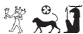
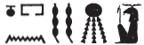
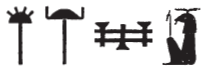
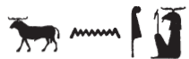
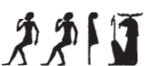
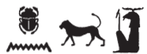
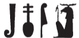
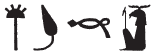

Column 15 (353-363)
Esna 353
- Location: Column 15
- Date: Domitian
-
Hieroglyphic Text
- Bibliography: None
Abȝ n Rʿ
ḫpr ẖr-ḥȝ.t
ḥngg=f n mȝȝ=f
m ẖr.t-hrw
ỉr=f n=f ỉmỉ.t-(pr)
ḥr rn=f
r’-ʿ nḥḥ ḏ.t
ẖnmw-Rʿ nb sḫ.t
A The Ba of Re,
who came about in the beginning,
he rejoices to see him
every day.
He makes for him a property deed
in his name,
its limits are all eternity.
Khnum-Re Lord of the Field.
BỈwn wr ḫnty Ỉwny.t
ỉt-ỉt.w
wtṯ nṯr.w rmṯ
ʿw.t nb mỉt.t
ḥr=sn ʿn(.w)
r bw nty (ỉw=f) ỉm
ḥr nḥ.t ʿnḫ=sn m-ʿ=f
ẖnmw-Rʿ nb tȝ-sn.t
Great Iun within Iunyt,
father of fathers,
who begat gods, people,
and likewise all animals.
Their faces are turned back
to the place where (he) is,
beseeching their lives from him.454
Khnum-Re Lord of Esna.
Esna 354
- Location: Column 15
- Date: Domitian
-
Hieroglyphic Text
- Bibliography: None
Cartouches of Domitian, Heka, Khnum, Menhyt, and Nebtu. All conventional spellings.
Esna 355
- Location: Column 15
- Date: Domitian
-
Hieroglyphic Text
- Bibliography: Sauneron 1962, pp. 165-166; Rüter 2003, pp. 73-75; see also Tempeltexte 2.0
NB: This hymn continues from Esna 277 and Esna 366.
§25 
1snḏ n ẖnmw
nȝ nty(.w) šm n bw nb
ntf zȝw mnḫ
n ḫnd ḥr mw=f
nb zḫn
sšm šsm.w=f nb
r mṯn n ʿnḫ
1 Have fear for Khnum,
those who travel in any place!
He is the effective guardian,
of whomever walks on his water.
The lord of astral influence,
who guides all his followers
to the path of life.
§26 
snḏ n ẖnmw
nty(.w) snḏm m pr=sn
m nỉw.wt spȝ.wt
ḥnʿ ḫȝs.wt nb(.w)
ntf ḫy ḫʿỉ m ȝḫ.t
2nb kȝ.w
ʿšȝ ḏfȝ.w
wp stw.t=f ʿnḫ
n ḥr.w nb.w
Have fear for Khnum,
those who sit in their houses,
in (Egyptian) cities and districts,
and all foreign lands.
He is the child who appears in the Akhet,
2 Lord of food,
numerous of provisions:
his rays send out life
for everybody.
§27 
snḏ n ẖnmw
nty(.w) nh(.w) m ḥw.t-wr.w
ntf nb fȝỉ
wr bỉȝ.wt
rdỉ wȝ.t n šzp.w
r mrw=f
3[…] n zȝ.t=f ẖnm.t
Have fear for Khnum,
those who are detained in courts!455
He is the lord of prestige,
great of miracles,
who releases prisoners
as he desires,
3 […] of his daughter, Khnumit.
§28 
snḏ n ẖnmw
nty(.w) ỉw ḥʿw=sn m srf
ỉr=sn nỉs n=f
ỉw=f m ṯȝw nḏm
sqb=f ḥʿw=tn
m ḥnbb
Have fear for Khnum,
those whose bodies are burning!
When they call out to him,
he arrives as a pleasant wind,
and cools your body
as the north-wind.
§29 
snḏ n ẖnmw
nty(.w) ḥḏ.w=sn m ḥsw
ỉm=tn 4wrḏ
n šms kȝ=f
ḏbȝ=f tn
m pr
m ḥnb.t=f
rwty.w m wš n šfy.t=f
Have fear for Khnum,
those whose bones are freezing!
Do not 4 tire
of serving his Ka.
He will reward you
with what comes forth
from his plots of land.
Outsiders are ignorant of his prestige.
§30 
snḏ n ẖnmw
ỉr.wt nb.w
nty.w m ḥnk.(w)t=sn
ntf mnhz
zȝw n nmʿ
nb ʿnḫ pw
5dỉ r mr=f
Have fear for Khnum,456
everybody
who are in their beds!
He is the guardian,
protector of the bed.
That means Lord of life,
5 who gives as he pleases.
§31 
snḏ n ẖnmw
nȝ nty m
sbḫ.t ȝḫ.t
ntf nb stwḫ
stwḫ ḥʿw=tn
srnp ḥḏ.w
m ỉrw=f n
ḫnty sḥ-nṯr
Have fear for Khnum,457
those who are in
the Portal of the Akhet.
He is lord of mummification,
who mummifies your bodies,
and rejuvenates bones,
in his form of
Foremost of the Divine Tent.
§32
snḏ n ẖnmw
ỉmy.w rsy.t
ntf bȝ ʿnḫ
m ḥȝ.t-spȝ.wt
ỉỉ.n=f m ḥʿpỉ
6ỉỉ.n=f m ḥʿpỉ
r ỉwḥ ȝḫ.t
r bʿḥ tȝ
m nfrw=f
Have fear for Khnum,
those who are in the South!458
He is the living Ba
in First of the Nomes (Elephantine).
That he arrived as the Inundation
6 (that he arrived as the Inundation)
is to flood the field,
and to inundate the land
with his goodness.
§33 
snḏ n ẖnmw
ỉmy.w mḥy.t
ntf bȝ n Šw
ḫnty Ỉwny.t
ỉỉ=f m ṯȝw nḏm
r sʿnḫ wnn.t nb
r srwḏ ȝḫ.t
r sḫp(r) pr.t nb
7r sḫpr pr.t nb.w
n qmȝ.n=f
Have fear for Khnum,
those who are in the North!459
He is the Ba of Shu,
foremost of Iunyt.460
He arrives as a pleasant wind
to enliven all that exist,
to make the field grow,
and to produce all seeds,
7 (to produce all seeds)
for those whom he created.461
snḏ n ẖnmw
ỉmy.w ỉmnt.t
ntf sr wr
sḥḏ.n=f dwȝ.t m grḥ
(ḥr) srnp Wsỉr m ḥḏḏ.w=f
(ḥr) sẖrd ỉmnty.w
m mȝwy=f
Have fear for Khnum,
those in the West!
He is the great ram,
who illumined the Duat at night,
rejuvenating Osiris with his rays,
making young the Westerners
with his solar brilliance.
§35
snḏ n ẖnmw
ỉmy.w ỉȝbt.t
ntf bȝ wbn
8ntf bȝ wbn
m bȝẖw
ʿnḫ ḥr.w-nb.w m st.wt=f
Have fear for Khnum,
those in the East!
He is the Ba who rises
8 (he is the Ba who rises)
from Bakhu,
everybody lives from his rays.
§36
snḏ n ẖnmw
nty(.w) ỉwty.w
ntf nb kȝ.w ḏfȝ.w
mw ṯȝw ȝm(.w) m ḫfʿ=f
dỉ=f ỉm n mr=f
Have fear for Khnum,
those with and those without!
He is the lord of food and provisions,
water and air are held in his grasp:
he gives them to whomever he pleases.
Esna 356
- Location: Column 15
- Date: Domitian
-
Hieroglyphic Text
- Bibliography: Sauneron 1962, pp. 175-176; Quack 1995 (extensive commentary); Leitz, Löffler 2019, pp. 57-58.
8pȝ ỉȝw zp-snw
n nṯr pn šps
9ỉ pȝ ỉr snḏm ḥr srḫ
r grg bw nb.w
10ỉ pȝ ỉr pẖr tȝ.wy m ʿnḫ
r sʿnḫ ỉmỉ=sn
11ỉ pȝ ḥry nḥp
nty qdỉ r mr=f
8 The praises
for this august god:
9 O he who sits462 upon the serekh,
to populate every place.
10 O he who encircles the lands with life
to enliven those within them.
11 O chief of the potter’s wheel
who builds as he desires.
12ỉ pȝ nbỉ ṯȝw
ỉr wḏ ʿnḫ n qmȝ.n=f
13ỉ pȝ kȝ sṯỉ
ỉr ỉr mw m qs.w
14ỉ pȝ ỉbkȝ ḥmw.wt
m ỉr.n=f
15ỉ pȝ ỉt mnḫ
ỉr ṯz pr.t ȝḫ.t
16ỉ pȝ ỉr ẖnm nṯr.w
rmṯ.w ʿ.wt nb.w
ḥr nḥp=f
17ỉ pȝ ỉr qd nb
r sšm tȝ.wy
18ỉ pȝ ỉr sḫpr wȝḏ
n nṯr.t nt.t r-ḥnʿ[=f]
12 O he who fashions the wind,
who decrees life to those he created.
13 O procreating bull,
who makes semen in bones.
14 O he who makes women pregnant
through what he has done.
15 O beneficent father,
who binds together excellent seed.
16 O he who models the gods,
people, and all animals
upon his potter’s wheel.
17 O he who builds the Lord
in order to lead the two lands.
18 O he who creates the papyrus scepter
of the goddess who is beside [him].
19ỉ pȝ ỉr ṯnỉ mr=f
m ẖ.wt
20ỉ pȝ ỉr qmȝ swḥ.t
r-ḏr ỉb=f
21ỉ pȝ ỉr sʿnḫ ṯȝw
m nfy=f
22ỉ pȝ ỉr sd qrḥ.t
r sw=s
23ỉ pȝ ỉr šd ỉr.n=f
m štȝ.t nb.t
24ỉ pȝ ỉr nsw nṯr.w
ḫprw=f ḥr qdỉ
25ỉ pȝ ỉr dỉ.t wȝ.t
n gȝw-ḥty
m ỉrw=f
26[ỉ pȝ ỉr mḥ ẖn]m.ty
m ṯȝw
27[ỉ pȝ] ỉr ẖnm ḥʿw m ʿnḫ
28ỉ pȝ nty ỉw fkȝ=f
qd-sʿnḫ
19 O he who distinguishes whom he loves
within the womb.
20 O he who creates the egg
according to his heart.
21 O he who enlivens the embryo
with his breath.
22 O he who opens the amniotic sac
at its day.
23 O he who nourishes what he made
in every womb.
24 O he who acts as King of the Gods (Amun)
whose manifestation is the potter.
25 O he who makes a path
for the fetus (‘the not-yet-breathing’)
in his visible form.
26 [O he who fills the no]strils
with air.
27 [O he who] endows the body
with life.
28 O he whose reward
is building and enlivening.
This hymn continues in Esna 367.
Esna 357
- Location: Column 15
- Date: Domitian
-
Hieroglyphic Text
- Bibliography: Quack 1995, p. 114.
29ỉȝw zp-snw
nṯr pn šps
ỉw=f pw m ḥtp zp-snw
swr=f šfy.t
n zȝ=f mry(=f)
nsw.t-bỉty
(ỉwtgrtr kysrs)|
zȝ-Rʿ
(tmdyns nty-ḫwỉ)|
29 Praise, praise!
This august god,
he has come in peace!
May he magnify the respect
for his beloved son,
King of Upper and Lower Egypt
(Autokrator Caesar)|
Son of Re
(Domitian Augustus)|!
Esna 358
- Location: Column 15
- Date: Domitian
- Hieroglyphic Text
- Bibliography: Sauneron 1962, pp. 182-183; see also Tempeltexte 2.0
NB: The conclusion to the hymn Esna 368, 36, apparently points to this hymn, since both text mention the phrase ḏsr kȝ=f in the title.
29nỉs rn n nṯr pn
m ḏsr wr
r sḥtp ỉb[…]
[…]
[s]nḏm ḥr srḫ
30ḏsr kȝ=f
m ỉr.n=f
ḏd-mdw
nfr.wy ỉr(.w).n=k nb.w
ẖnmw-tȝ-ṯnn
ỉt nṯr.w
sḫm wr
ʿšȝ ỉrw
ʿḫ.n=k p.t
m r-ʿ.wy=k
grg.n=k [tȝ]
[m …]
[…]=k
29 Calling the name of this god,
in great sancity,
to pacify the heart[…]
[…]
[he who s]its upon the serekh.
10 Sanctifying his Ka
by means of that which he made.
Words spoken:
How good is all you have made!
Khnum-Tatenen,
father of the gods,
great power,
numerous of forms.
As you raised the sky
through your handiwork,
so did you populate [the earth]
[through …]
[…] your […]
qdỉ.n=k 31rmṯ.w
ỉr.n=k nṯr.w
nḥp.n=k ʿ.wt mnmnm.t
nbỉ.n=k r’.w ḏdf.w
rm.w ȝpd.w
[qmȝ].n=k ỉḫt nb.w
32ḥr nḥp=k rʿ-nb
sṯnỉ.n=k nsw.t
m nb ỉmỉ.tw=sn
ḥr wḏ=f n=sn sḥn
swr.n=k šfy.t=f
ḥr ỉr(.t)=sn m wḏ=f
33ỉw nṯr.t nty r-ḥnʿ=k
ỉr=s mḥn.t ḥr tp=f
m rn=s n Mnḥy.t
mw.t-nṯr Rʿ
mhr.n=s ḥm=f
swr=s pḥty=f
r ḫfty.w=f
34m rn=s pfy n N.t
As you built 31 humans,
so you made the gods,
you modelled small and big livestock,
and you fashioned snakes, serpents,
fish and fowl:
thus do you [create] all things
32 upon your potter’s wheel, daily.
You distinguished the king,
as a lord among them all,
issuing commands to them.
You magnified his prestige,
as they act through his decree.
33 The goddess who is with you:
she acts as uraeus (mḥn.t) upon his head,
in this her name of Menhyt (Mnḥy.t).
The divine mother of Re:
she nursed his Majesty,
so she might magnify his strength
against his enemies,
34 in this her name of Neith.
ỉn ḥnw.t sḫ.t
ỉr=s n=f ȝḫ.w n ȝḫ.t
qȝb=s nfr.w m rk=f
m rn=s pfy n Nb.t-ww
ỉn nsw.t-bỉty
ỉr=f n=f
35nfr.t m nsw.t šmʿ
n.t m bỉty mḥw
ỉw ḫȝs.wt nb.w ẖr ṯb.ty=f
m rn=f pfy n Wsỉr
ỉn nb.t tȝ.wy
ỉr=s n=f mks
36ỉmỉ.t-pr n tȝ r-ḏr=f
m rn=s pfy n Ỉs.t
ỉn ỉwʿʿ=k Gbb
ỉr=f n=f ns.t=f
r ḥqȝ.n=f tȝ.wy
m rn=f pfy n Ḥkȝ
The Mistress of the Field:
she makes excellent things of the field for him,
and she doubles good products in his time,
in this her name of Nebtu.
The King of Upper and Lower Egypt:
he makes for him
35 the white crown as King of Upper Egypt,
the red crown as King of Lower Egypt,
with all foreign lands under his sandals,
in this his name of Osiris.
The Lady of the Two Lands:
she make the inheritance document for him,
36 the property deed of the entire earth,
in this her name of Isis.463
Your heir, Geb:
he makes the throne for him,
so he could rule (ḥqȝ) the two lands,
in this his name of Heka (Ḥkȝ).
ỉb n Rʿ
spẖr=f n=f 37ḥb.w-sd.w wr.w
m rn=f pfy n Ḏḥwty
sšm=k n=f
m nḫy nfr
ḥr zȝ=f m tȝ.wy ḫȝs.wt
twt(.w) kȝ=f
n šw=k ỉm=f
m rn=k pfy n Šw
ḥtp ḥr=k nfr
n nsw.t-bỉty
nb tȝ.wy
(ȝwtwgrtwr kysrs)|
zȝ Rʿ
nb ḫʿ.w
(tmdyns nty-ḫwỉ)|
wḏ=k n=f ʿnḫ r ḥn.ty
The Heart of Re:
he inscribed for him 37 great jubilees,
in this his name of Thoth.464
Your image is with him,
as a good protector,
guarding him in all lands.
You are his Ka,
and you are not lacking (šw) in him,
in this his name of Shu (Šw).465
May your good face be kind
to the King of Upper and Lower Egypt,
Lord of the Two Lands,
(Autokrator Caesar)|
Son of Re,
Lord of Appearances,
(Domitian Augustus)|,
and grant him life for all eternity!
39m-sȝ nn
mȝȝ r pȝ wḫȝ n rsy.t
n nȝ ỉrw.w n ẖnmw
ḥnʿ psḏ.t=f
nty m pȝ wḫȝ rsy.t ỉmnt.t
n ḫft-ḥr
39 After this,
see the column to the south,
for ‘The Rituals of Khnum
along with his Ennead’
which is on the south-western column
of the processional axis (see Esna 369).
Esna 359
- Location: Column 15
- Date: Domitian
-
Hieroglyphic Text
- Bibliography: None
- Compare the symmetric inscription Esna 370
40ʿnḫ nṯr nfr
ỉmy-rȝ mḥty
mỉ nb tm.t
sḫm (m) sṯty.w
ỉṯ fȝỉ=sn gȝ.wt
nw ḥḏ nbw
ỉn.w nb.w n tȝ-bnr
r bʿḥ ḥw.t-N.t
m ȝḫ.w=s
n ḫnty-š
(tmdyns ḫwỉ)|
mry N.t wr.t
mw.t-nṯr
nb.t tȝ-sn.t
40 Live the good god,
Overseer of the Northern District,
like the Lord of Baltim.466
He who takes control of the Asiatics,
who seizes, so they bring vessels
of silver, gold,
all good things of foreign lands,
to inundate the Temple of Neith
with her excellent products,
from Khent-she.
(Domitian Augustus)|
beloved of Neith the Great,
Mother of God, Lady of Esna.
Esna 360
- Location: Column 15
- Date: Domitian
-
Hieroglyphic Text
- Bibliography: Kinnaer 1991, pp. 85-86.
Formula
1mn n=k mks
[ỉmỉ.t-pr]
n tȝ (r)-ḏr=f
šnw n tȝ
ḥr ỉfd.w=f
ỉr.n […]
2šmʿ mḥw ḥr.tw
r bw.t=f
m sš n Ḏḥwty ḏs=f
ỉr ʿr s.t
r s.t=f
ḫp(r) ḫrwy.t
3m tȝ (r)-ḏr=f
1 Take the document holder,
[the inheritance] document
of the entire earth:
the circuit of the globe
upon its four sides,
made by […]
2 Upper and Lower Egypt
avoid his abomination,
from the writing of Thoth himself:
‘If a woman should approach
his place,
a disaster will befall
3 in the entire land.’
The King
4nsw.t-bỉty
nb tȝ.wy
(ȝwtwgrtwr kysrs)|
5zȝ Rʿ
nb ḫʿ.w
(twmtyns nty-ḫwỉ)|
6ḫnty n Rʿ
mswt n Ỉtm
7nṯr nfr
ḥqȝ zȝ ḥqȝ
ỉty wr ḥry srḫ
ỉdn s.t
nt bỉk n nbw
ỉmỉ.t-pr m ʿ=f
psš.ty m ʿ.wy=f
(ḥr) mʿȝ n kȝ
n nb ỉȝw.wt
(ḥr) ẖnk n ḥm=f
m ỉḫt ỉt=f
nb tȝ.wy
(twm(t)y[ns nty-ḫwỉ])|
4 The King of Upper and Lower Egypt,
Lord of the Two Lands,
(Autokrator Caesar)|
5 Son of Re,
Lord of Appearances,
(Domitian Augustus)|
6 Replica of Re,
image of Atum.
7 The good god,
Ruler, son of the ruler,
great sovereign upon the serekh,
he who takes over the throne
of the Falcon of Gold;
he has the inheritance document,
the Two Shares (Egypt) are in his hands;
offering to the Ka
of the Lord of Offices,
presenting to his Majesty,
with the property of his father:
Lord of the Two Lands,
(Domiti[an Augustus])|
Khnum upon his great throne
8ḏd-mdw n ẖnmw-Rʿ
ḥry s.t=f wr.t
ḥry-ỉb ḥw.t-bȝ.w
bȝ ʿȝ
9pḏ nmt.t ḫnt sḫ.t=f
ḥry wḏb
wtṯ ỉḫt nb
mḥ-ỉb 10n ỉt=f Rʿ
swḏ=f n=f ḥqȝ=f
ns.t=f nswy.t=f
m p.t 11tȝ
ḥp.ty r-ʿ st.wt ỉtn
12dỉ=ỉ n=k ỉfdw n […]
8 Words spoken by Khnum-Re,
upon his great throne,
within the Temple of the Bas.
Great Ba,
9 wide of steps within his field;
Chief of agriculture,
confidant 10 of his father, Re:
he commends to him his rule,
his throne, and his kingship,
in heaven 11 and earth,
the limits are the rays of the sun disk.
12 I give to you the four corners of […]
Isis-Nebtu
13ḏd-mdw n Ỉs.t-Nb.t-ww
ḫnt(.t) sḫ.t
mȝʿ.t wr.t r-gs ẖnmw
13ḫʿỉ(.t) r-ḥȝ
tp hrw 10 nb
ḥr sfsf ȝw
n sn=s
ḥnʿ ḥtpty.w
15[…] rnp bȝ=sn n mȝȝ=s
nn ȝb rʿ nb
16dỉ=ỉ n=k šmʿ-mḥw
m ỉmỉ.t-pr
n ḥḥ n rnp.wt
ḥfnw m ḥb.w-sd.w
ʿšȝ […]
13 Words spoken by Isis-Nebtu,
foremost of the Field,
Great Maat beside Khnum.
13 She who goes out in procession
every 10 days
to lay down offerings
for her brother,
as well as the blessed dead
15 […] their Bas rejuvenate to see her,
without fail, every day.
16 I give to you Upper and Lower Egypt,
in an inheritance document
of thousands of years,
myriads of Sed-Festivals,
numerous […]
Behind the Divinities
17nsw.t-bỉty
Šw ṯmȝ-ʿ
nʿš dnỉ.t
nb pḥty
ʿȝ mrw.t
wr bȝw n šmʿ-mḥw
ḥʿʿ ỉt=f Rʿ
n mȝȝ=f
dỉ=f n=f ḥqȝ=f
nswy.t=f
m pt tȝ
bw nb psḏ=f ḥr=sn
ẖnmw-Šw nb ḥz.wt
ḫnty ḥw.t-ẖnmw
17 The King of Upper and Lower Egypt,
Shu, valiant of arm,
fierce of shout,
lord of strength,
great of love,
great of power in Upper and Lower Egypt;
his father, Re, rejoices
from seeing him.
He gives to him his rule,
his kingship,
in heaven and earth,
and all places over which he shines.
Khnum-Shu, Lord of Praise,
foremost of Temple of Khnum.
Esna 361
- Location: Column 15
- Date: Domitian
-
Hieroglyphic Text
- Bibliography: See Tempeltexte 2.0
Formula
1mn n=k wsḫ nfr
ʿpr(.w) m ỉrw=f
psḏ.t=f m nh(.t) ḥȝ=k
wȝḥ n [ỉt=k Ỉtm]
2r ḫḫ=k
mḥ n Ḫprỉ
r šnb.t=k
ȝw-ỉb=k ỉm=f
ḫw=f ḥʿw=k
r ḏw [nb]
1 Receive the good wsḫ-collar,
equipped in its visible form;
its Ennead surrounds you in protection.
The garland of [your father Atum]467
2 is at your neck;
the wreath of Khepri
is on your chest.
May you be happy from it,
may it protect your body
from [all] evil.
The King
3nsw.t-bỉty
nb tȝ.wy
(ȝwtwgrtwr kysrs)|
4zȝ Rʿ
nb ḫʿ.w
(twmtyns nty-ḫwỉ)|
5wʿb ḥʿw
sẖkr šnb.t n ỉt=f
6nṯr nfr
nsw.t n Km.t
ḥqȝ n ḫȝs.wt nb.w
ḫbỉ ỉnw
m tȝ [r-ḏr]=f
Rʿ n rmṯ.w
Ḫprỉ n pʿ.t
Ỉtm n ḥnmm.t
sẖkr ḥȝw n ỉt=f
m wsḫ nfr
ẖnm nṯr n nṯr
nb mȝʿ-ḫrw
(twm(t)y[ns…])|
3 The King of Upper and Lower Egypt,
Lord of the Two Lands,
(Autokrator Caesar)|
4 Son of Re,
Lord of Appearances,
(Domitian Augustus)|
5 Pure of body,
who adorns the chest of his father.
6 The good god,
king of Egypt,
ruler of all foreign lands,
who collects tribute
from [the entire] earth.
Re for the rmṯ-people,
Khepri for the pʿ.t-people,
Atum for the sunfolk.468
He who adorns the chest of his father,
so that god unites with god,
lord of justification,
(Domi(t)ia[n…])|
Khnum
7ḏd-mdw n ẖnmw-Rʿ
nb tȝ-sn.t
Šw wr smsw n nb-ḏr
8nṯr mnḫ
sȝẖ mnw.w
nb zḫn
snsn sn.t=f
m ḥḏ=f rʿ nb
9dỉ=ỉ ḫnd=k ḥr sȝ
n ḫfty.w=k
mỉ zš ṯȝw
ḫnt mnw=sn
7 Words spoken by Khnum-Re,
Lord of Esna,
Great Shu, eldest of the All-Lord,
8 Beneficent god,
who makes monuments excellent;
Lord of unions,
who embraces his sister
in his shrine, every day.
9 I allow you to tread
upon the back of your enemies,
just like the wind travels
through their trees.469
Nebtu
10ḏd-mdw n Nb.t-ww
nb(.t) tȝ-sn.t
sḏ.t wr.t
bs(.t) 11m hrw
nb(.t) ỉhy
ʿšȝ ḥb.w
bwt=s ḥqr ỉbw
12sn.t n sn=s
dmḏ(.t) r-ḥnʿ=f
nỉ ḥr=s r=f rʿ nb
13dỉ=ỉ n=k […]
10 Words spoken by Nebtu,
Lady of Esna,
great child,
who comes forth in the day.
Lady of rejoicing,
numerous of festivals,
who hates hunger and thirst.
12 A sister to her brother,
who unites together with him,
never leaving him, every day.
13 I give to you […]
Heka
14ḏd-mdw n Ḥkȝ pȝ-ẖrd
wr ḥkȝw [zȝ] sḫm.t
[…]
15nb nḥp
ỉry-pʿ.t wr m-m nṯr.w
14 Words spoken by Heka the Child,
Greatest of magic, [son] of Sakhmet,
[… firstborn child of]
15 Lord of the Potter’s wheel (Khnum),
great nobleman among the gods.
Behind the divinities
16nsw.t-bỉty
bȝ m ỉtr.ty
s.wt štȝ.wt mn.tw
ẖr sštȝ=f
ỉss ỉt=f
ḏr zp tpy
šȝʿ.n=f msw.t=f
ḥnʿ sn.t=f
m ḥb nfr
tpy šmw III
zȝ=f mỉt.t m ḥrw pn
sw m wr rn m-m nṯr.w
ẖnmw Nb.t-ww Ḥkȝ
nb.w [wr].w [nw] Ỉwny.t
16 The King of Upper and Lower Egypt,
the Ba in the Dual Chapels;
all secret places are established
bearing his mysterious image.
Spat out by his father,
since the first moment,
he began his birth
together with his sister,
on this good festival,
III Shomu 1 (= Pakhons 1);
likewise his son on this day,
they are great of name among the gods:
Khnum, Nebtu, and Heka,
the [great] lords [of] Iunyt.470
Esna 362
- Location: Column 15
- Date: Domitian
-
Hieroglyphic Text
- Bibliography: See Tempeltexte 2.0
Anṯr nfr
ỉṯ ḥḏ.t
ẖnm n.t
mỉ Ḥr
šzp.n=f sḫm.ty
nb ỉmỉ.t-pr
(ȝ[w]twkrtr ksrs)|
ʿnḫ mỉ-Rʿ ḏ.t
A The Good God,
who seizes the white crown,
and joins the red crown,
like Horus,
when he received the double crown;
Lord of the inheritance document
(A[u]tokrator Caesar)|
living eternally like Re.
Bmry ẖnmw […]
nb kȝ.w ḏfȝ.w
dỉ=f ỉm n mr=f
B Beloved of Khnum […]
Lord of food and provisions,
he gives therefrom to whomever he likes.
Cnṯr nfr
nsw.t (??) […]
[…]
nb ršw […]
(tmdy[ns nty-ḫwỉ])|
ʿnḫ mỉ-Rʿ ḏ.t
C The good god,
(???) king […]471
[…]
Lord of joy […]
(Domiti[an Augustus])|
living eternally like Re.
Dmry ẖnmw-Rʿ nb tȝ-sn.t
Šw wr ḫnty Ỉwny.t
ʿȝ ỉrw m p.t tȝ
nỉs n=f tȝ.wy nb
m rn=f wr
r sʿnḫ ṯȝw m-ẖnw štȝ.t
nn nṯr ỉr ỉr.n=f
D Beloved of Khnum-Re Lord of Esna,472
Shu the great within Iunyt,
all lands call out to him
in his great name,
to enliven the fetus within the womb;
there is no (other) god who does what he did.
Esna 363
- Location: Column 15
- Date: Domitian
-
Hieroglyphic Text
- Bibliography: None
Minor inscriptions and decoration: cartouches of Domitian and Heka.